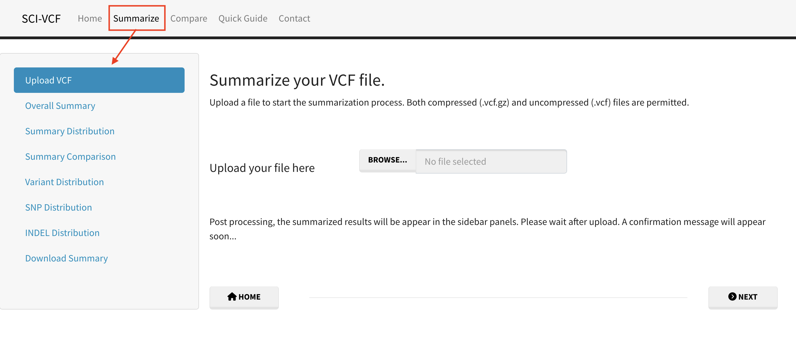

Getting Started
A guide to understand the workflows and submodules of SCI-VCF for summarizing, comparing, visualizing and analysing your VCF files.
Summarize
The summary of a VCF file is generated by classifying variants and summing up unique entries in each category.

Summarize Submodules
- Upload VCF: Click the browse button and upload a VCF file.
- Overall Summary: Get an overall summary of the distribution of variants in each variant type.
- Summary Distribution: Visualize the distribution of different variant metrics along different contigs.
- Summary Comparison: Compare the distribution of variant metrics with each other.
- Variant Distribution: Visualize the occurrence of variants in different genomic ranges.
- SNP Distribution: Plot the count for all 12 possible SNP types in the VCF.
- INDEL Distribution: Plot the size distribution of INDELs in the VCF
- Download Summary: Extract the results as a tabular dataset for further analysis.
Compare
Unique and common variants in two VCF files are identified by using the first eight mandatory columns as two-dimensional heterogeneous tabular datasets.

Compare Submodules
- Upload VCFs: Click the browse button and upload two VCF files in order.
- Venn Diagram: View area-proportional Venn diagram depicting the number of common and unique variant types.
- Overall Summaries: Get overall summaries for various variant types for unique and common variants.
- Summary Distribution: Visualize the distribution of different variant metrics along contigs for common and unique variants.
- Variants Distribution: Visualize the occurrence of unique and common variants in different genomic ranges.
- Download Summaries: Extract the results as a tabular dataset for further analysis.
- Download Variants: Extract the common and unique variants as a tabular dataset for further analysis.